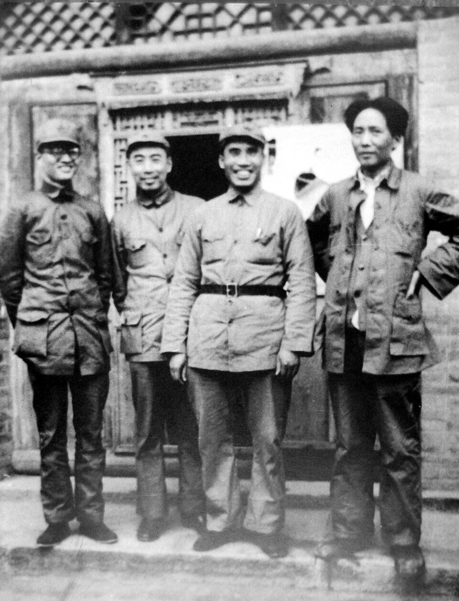
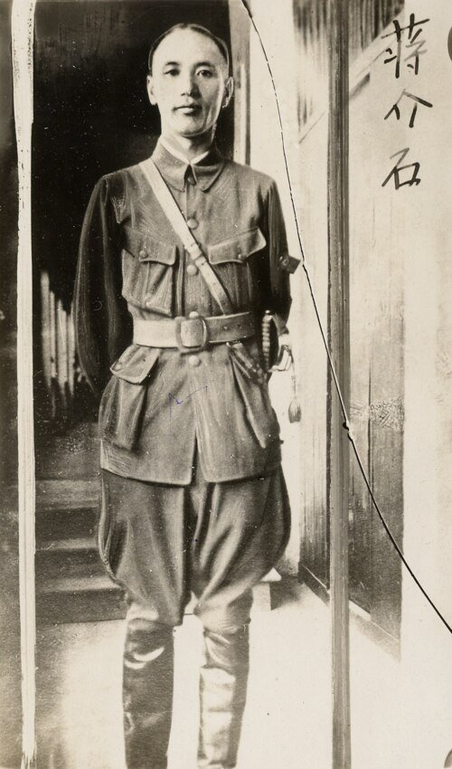

Unit 13 · Study guide · China
Nationalists vs. Communists 南京 · 延安
War and revolution in China, 1927–1949
ContentsOverview
The unit in one paragraph
pp. 439, 453–454
From 1927 to 1949 China was ruled by the Nationalist Party and its head, Chiang Kaishek. His government looked to the West for help in modernizing but distrusted intellectuals. The big cities, above all Shanghai, took on a modern look, yet the government spent most of its energy on war: first against the remaining warlords, then against the Communist bases, then against Japan. The Communist Party had a small but committed following and was on the run until it set up a base at Yan'an in 1935, where Mao Zedong became the top leader. During the war with Japan (1937–1945) the Communists built a disciplined force out of poor peasants, and they won the civil war of 1947–1949.
- Why did May Fourth liberalism lose its importance?
- Could the Nationalists' economic policies have made China prosperous if Japan had not invaded?
- How much did the Comintern's often misguided instructions shape the Communist Party?
- How crucial was Mao to the way the party's policies developed?
- Why did the Nationalist Party and Chiang Kaishek lose the support of the urban middle class?
Led by Chiang Kaishek from 1928. Capital at Nanjing, later Chongqing. City-based, Western-educated experts, German then American help. Lost the mainland in 1949 and moved to Taiwan.
Founded 1921 with Comintern help. Crushed in the cities in 1927, rebuilt in the countryside (Jiangxi, then Yan'an). Led by Mao from the mid-1930s. Won by mobilizing peasants.
Timeline at a glance
The Chinese Communist Party
pp. 439–441
Why Marxism appealed pp. 439–440
After the Bolshevik Revolution of 1917, Chinese intellectuals took an interest in Marxism–Leninism, which seemed to offer a blueprint for a world of abundance without exploitation. Communism looked scientific, anti-Western, anti-imperialist, and successful: it had just brought revolution to a backward country. China had little proletariat to lead a revolution, but Li Dazhao argued that the nation as a whole was exploited by the capitalist imperialist countries.
- 1May 1919. Li Dazhao, the librarian at Beijing University, introduces Marxist theory (class struggle, capitalist exploitation) in New Youth. Intellectuals also read Lenin and Trotsky, who predicted a world revolution that would end imperialism.
- 21919–1920. Thousands of Chinese students, men and women, go to France on work-study programs. Most work in factories, where they meet strikes and Marxism–Leninism.
- 31920. Li organizes a Marxist study group at Beijing University; Chen Duxiu organizes one in Shanghai. Comintern agents arrive to turn the groups into party cells.
- 4July 1921. Thirteen delegates found the Chinese Communist Party as a secret, exclusive, centralized party. It breaks with anarchists and guild socialists, puts class struggle first, and chooses Chen Duxiu as secretary general. Priority: labor unions and recruiting workers. In Shanghai it sets up a Russian language school and the Socialist Youth Corps.
Democratic centralism p. 440
The Comintern taught "democratic centralism," the secret of party discipline. A cell could debate a decision, but once it was made, everyone had to obey. This gave a degree of discipline and centralization beyond anything in earlier Chinese organizations.
The United Front and its violent end p. 440
At the Comintern's insistence, and against the advice of many Chinese members, the party allied with the Nationalists in 1922. The United Front let both concentrate on the warlords, but it covered deep differences: many Nationalist officers were staunch anticommunists, appalled by talk of class warfare. The Communists stayed in partly because it let them organize workers and peasants. Along the route of the Northern Expedition, farmers' associations grew to more than 1 million members by the end of 1926.
| Date | What happened |
|---|---|
| March 21 | As the Nationalist army nears Shanghai, the Communist-led General Labor Union calls a general strike. More than 600,000 workers seize the city and demand the return of the foreign concessions. |
| April 11 | The union's head is invited to the home of the leader of the mafia-like Green Gang and murdered there. |
| April 12 | Green Gang members and soldiers loyal to Chiang attack union headquarters; soldiers machine-gun civilians. About 5,000 are killed. The terror spreads to other cities and destroys the party's labor base. |
| July | The party tries to keep working with the Nationalist left wing in Wuhan, but Chiang's force wins. Soviet advisers leave the Nationalist army; the United Front is over. |
| Fall | Communist uprisings in cities and countryside fail. A failed uprising in Guangzhou leads to the execution of 3,000–4,000 worker revolutionaries. |
From 1927 through 1930 the hunt for Communist organizers went on all over the country; in some areas, troops took bobbed hair as proof that a young woman was a communist. The surviving leaders went underground and into the countryside. On Comintern orders, Chen Duxiu was blamed for the disasters and expelled. pp. 440–441
Mao Zedong's emergence as a party leader
pp. 441–442
Through the 1920s Mao Zedong was just one of hundreds of Communist organizers. Because he later shaped twentieth-century China so deeply, the textbook starts with his early life. p. 441
Mao Zedong, 1893–1930
- 1893–1910 Born in a farming village about 30 miles south of Changsha, Hunan. Works on his father's 3-acre farm; six years of primary school; betrothed at fourteen to an eighteen-year-old who dies in 1910. Reads Kang Youwei and Liang Qichao.
- 1911–1912 Walks to Changsha for middle school, cuts off his queue, joins the republican army for six months.
- 1913–1918 After a year reading Rousseau, Mill, Adam Smith, and Darwin in the library, studies at the Hunan Provincial Fourth Normal School under Yang Changji. Publishes an article on physical education in New Youth (1917).
- 1918–1920 Library clerk at Beijing University under Li Dazhao. Back in Changsha he misses May Fourth, but starts a magazine and organizes a strike of 13,000 middle-school students against the local warlord. Lives with Yang Kaihui, his teacher's daughter, from 1920.
- 1921–1925 One of two Hunan delegates at the party's founding (1921). Organizes unions and strikes; joins the Nationalist Party (1923) as party policy required; United Front work in Guangzhou and Shanghai (1924); then works with peasants in his home village (1925).
- 1926–1927 Directs the Nationalist Party's Peasant Training Institute (1926). February 1927: a glowing report on Hunan peasants who had seized power from landlords. After the April terror, he concludes that "political power is obtained from the barrel of the gun."
- October 1927 Leads his remaining peasant followers to Jinggangshan, a mountain lair on the Hunan–Jiangxi border. Out of touch with Yang Kaihui and the party. Pushes an extreme land reform, redistributing all the land of the rich.
- 1929–1930 Moves to a better-supplied base on the Jiangxi–Fujian border: the Jiangxi Soviet. The party leadership condemns his views on rural revolution and military force. He studies Xunwu County in detail. October 1930: a failed party attack on Changsha; the Nationalists shoot Yang Kaihui.

Mao's class analysis of Xunwu County p. 442
To learn how a party could be built on a peasant base, Mao classified the rural population by landownership. He also recorded literacy rates, postal service, shops and services, and even the number of prostitutes. Click a group to see how he defined it.
The Nationalist government in Nanjing
pp. 442–444
Purging the Communists did not slow military unification. In 1928 the Nationalists won over three key warlords, reunited the country, and made Nanjing the capital, the first time since the early Ming. International recognition followed quickly, and Western observers were more hopeful about China than they had been in decades. Historians call the years that followed the Nanjing Decade. pp. 442, 444
Progressive laws
- Men who had studied in the West took many key posts.
- A land law limited rents.
- A marriage law outlawed concubinage and let women initiate divorce.
Rolling back foreign privileges
- Tariff autonomy recovered.
- Control regained over the Maritime Customs, Salt Administration, and Post Office.
- Extraterritoriality ended for some minor countries.
Chiang Kaishek pp. 443–444
From 1928 Chiang Kaishek led the Nationalists. He came from a landlord–merchant family near Ningbo and had hoped to take the civil service exams; when they were abolished he studied military science in Japan, where he joined the precursor of the Nationalist Party. Heading the Whampoa Academy from 1924 gave him strong personal ties to young officers. A skillful politician, he balanced cliques and built ties to key power holders. In 1927 he married Soong Meiling, from a wealthy merchant family and the sister of Sun Yatsen's widow.

- Turned to Germany to modernize the army; German advisers trained an elite corps, planned campaigns against the Jiangxi base, and supplied arms.
- Young officers joined the Blue Shirts, who opposed New Culture individualism and ran political training and secret service work.
- No elective democracy: this was a period of "political tutelage."
- Heavy press censorship; dissenters and suspected communists arrested and often executed.
- Much progress in economic modernization.
- Major cities took on a modern look; electricity changed how they worked.
- A professional class of scientists, engineers, architects, economists, and physicians, often trained abroad, gained influence.
"Can fascism save China? We answer: yes. Fascism is now what China most needs."Chiang Kaishek, cited in Lloyd Eastman, Abortive Revolution (1974), p. 40; quoted on p. 444
To counter the communists' intellectual appeal and build support, Chiang launched the New Life Movement, an ideological indoctrination program. Its goal, he said, was to "militarize the life of the people of the entire nation" and to nourish "a capacity to endure hardship and especially a habit and instinct for unified behavior," making people "willing to sacrifice for the nation at all times."
The countryside left behind p. 444
Modernization did not reach the villages. Most peasants had seen no rise in living standards since Qing times. Government and private rural reconstruction projects tried to improve rural education, create credit, encourage modern enterprises, and form peasant associations, but gains were usually limited to small areas and short periods.
- Population: over 500 million by 1930, pressing on the available land.
- Modernization's benefits (cheaper rail transport and manufactured goods) had yet to help the rural economy.
- Exports struggled: silk and tea lost ground to Japanese and Indian competition, then all exports suffered from the worldwide Depression of the 1930s.
Yuetsim, servant girl (born c. 1910)
The Nanjing government's new marriage law was one sign of efforts to improve women's lives through law. Yuetsim's story, told in Hong Kong in 1978, shows how far such laws were from ordinary lives.
- c. 1913 Kidnapped at about three, perhaps by disbanded soldiers, and sold through intermediaries as a "slave girl." She never knew her birth family.
- Childhood Bought by the Yeo family of Hong Kong to help Mr. Yeo's concubine (a former prostitute) with housework and her four children. The concubine was often harsh. Yuetsim never learned to read or write, and never heard of the press campaign against selling girls or the 1923 law that took first steps to outlaw it.
- December 1929 A stronger law requires owners to register slave girls, pay them wages, and free them at eighteen. Because Mr. Yeo worked for the government, he had to act; the angry concubine simply ordered Yuetsim out.
- 1930s An official finds her a place in a home for women and girls; years later she returns to the Yeos as a maid, knowing nowhere else to go. The wife and concubine die soon after.
- Later Mr. Yeo wants to make her his concubine, but his children, though their own mother had been a prostitute, think marrying a former slave girl would disgrace the family. He gives in. She stays anyway, nursing him in his illness.
Source: Maria Jaschok, Concubines and Bondservants (1988), pp. 69–77, as summarized on p. 443. The book's questions are in the Review kit.
Shanghai
pp. 444–445, 448
During the Nanjing Decade, Shanghai became one of the world's major cities. China's most populous city since 1910, it had China's largest port and was its commercial center, drawing Chinese entrepreneurs, especially those willing to work with foreigners. p. 444
Figure 8. Shanghai by the numbers (pp. 444–445).
Foreign fortunes and refugees p. 444
The British and Japanese were the most numerous foreigners, because they owned the most foreign companies. Among the families who made huge fortunes were the Sassoons, Jewish traders from Baghdad and Bombay:
- 1David Sassoon trades cotton from Bombay to China in the 1870s.
- 2Elias Sassoon, his son, buys warehouses in Shanghai later in the nineteenth century.
- 3Victor Sassoon, the grandson, turns to real estate; in the 1930s he reportedly owns 1,900 buildings, including today's Peace and Cypress hotels.
Early Sassoon employees also grew rich: Silas Hardoon, who started as a night watchman in the 1870s, and Elly Kadoorie, whose mansion is now the Shanghai Children's Palace. Because the international districts admitted anyone, whatever their passport or visa, Shanghai drew refugees: Russian bourgeois fleeing the Russian Revolution, who often found only menial jobs, and in the 1930s thousands of Jews fleeing the Nazis, helped by the Sassoons, Hardoons, and Kadoories.
Two faces of the city pp. 444–445
- Foreign power on display. Western-style roads and buildings; along the river the embankment called the Bund became a park with signs reading "No dogs" and "No Chinese."
- "Sin city." Gambling parlors and brothels.
- Labor. The typical prostitute or mill hand was a young, unmarried, illiterate woman recruited in the countryside by a labor contractor, who paid an advance (often to her parents) and arranged work, housing, and food. Many were kept in debt servitude. Some joined unions and struck; others hoped to marry and return home.
- A refuge for critics. As Nationalist censorship tightened, intellectuals, dissidents, and revolutionaries worked from the International District or French Concession, where they were usually safe from Chinese police.
Material culture: the qipao p. 448
Educated young people saw the West as the source of everything modern and adopted Western dress, but some sought a style both Chinese and modern. For men, the hybrid was the so-called Mao suit, first popularized by Sun Yatsen. For women, the qipao was the garment that best modernized Chinese dress, worn in Shanghai by everyone from factory girls and prostitutes to office workers and the wealthy. Tap a feature.
Relocating the revolution: the Long March and Yan'an
pp. 445–448
In 1932 the Central Committee gave up on urban uprisings and joined Mao in the Jiangxi Soviet. Mao chaired the soviet but was sidelined, his advice often overruled. In fall 1934 the Nationalists' German-planned fifth "extermination campaign" encircled the base with a million-man force, and the leadership, without consulting Mao, decided to abandon it. p. 445
The Long March lasted a year. The Red Army kept retreating, often a step ahead of Nationalist troops, with enormous casualties. The farther west it went the more rugged the land; skirting Tibet, the marchers faced bitter cold. By the time they found a new base in Shaanxi they had marched almost 10,000 kilometers. Most wives and children were left behind; Mao and the pregnant He Zizhen had to leave their two-year-old with Mao's younger brother, who was killed in 1935, and Mao lost track of the child. pp. 445–446
A huge victory. The party's urban activists had been crushed in 1927–1928; now its rural activists were just as badly hit, their numbers cut and the survivors driven into remote, poor regions.
A victory too. Overcoming such odds convinced them they were men of destiny with a near-sacred mission to remake China.
p. 446
Zunyi, early 1935 p. 446
Mao reached the top of the party during the march. At Zunyi in Guizhou, seventeen veteran leaders held an enlarged Politburo meeting, including Mao, the Comintern representative Otto Braun, and a thirty-year-old Deng Xiaoping taking notes. Blame for the losses fell on Braun and others who had urged positional warfare against the Nationalist attack. Mao joined the Standing Committee of the Politburo with new responsibility for military affairs.
Life in Yan'an, 1936–1946 pp. 446–448
Yan'an, a market town in central Shaanxi, was the party's base for a decade. Homes were often caves cut into the loess cliffs. The American journalist Edgar Snow, visiting in 1936, saw earthy, committed patriots and egalitarian reformers who lived in caves, ate simple food, and did not look down on the peasants they were mobilizing against Japan. Wartime observers were also impressed, and under Mao the official media promoted this image of a cohesive band of idealists.
- Rivals. In late 1935 communists trained in Russia arrived and reopened debate over the errors that had cost so many lives. Mao set out to master Communist dialectic; his new secretary, Chen Boda, who had studied in Moscow, began writing of Mao as a theorist.
- Against the educated. Mao grew more set against the claims of the well educated, even in Marxism. To set himself apart from urban intellectuals he acted like a peasant, opening his clothes to look for lice in front of guests.
- Winning. He beat the Soviet returnees as the better politician and, it seems, from real confidence that he was right. He lectured party members more and allowed the beginnings of a cult of Mao: in 1937 his portrait appeared in the revolutionary newspaper and a collection of his writings was printed.
- Jiang Qing. With He Zizhen and his surviving children in the Soviet Union for safety and treatment, Mao took up with Jiang Qing, a twenty-four-year-old former Shanghai actress. Some leaders who admired He Zizhen resented it. Their daughter, born in 1940, was the last of Mao's four surviving children (six were lost or died).
Wang Shiwei's "Wild Lilies" (1942)
Wang Shiwei (born 1906), a schoolteacher's son shaped by May Fourth, joined the party in 1926, studied in Moscow, and translated Marx and Lenin in Yan'an. In 1942 he published essays in the Liberation Daily showing the party as less than fully egalitarian. The party answered with a rectification campaign; Wang was tried, imprisoned, and in 1947 executed. The excerpt argues:
- Young people in Yan'an have lost enthusiasm. Some blame poor food, a men-to-women ratio of 18:1, or dreary life. Those needs are real, but people came to make revolution, not to satisfy desires.
- So what is "fundamentally lacking"? He reports two young women he overheard: their superiors preach against "petty-bourgeois egalitarianism" while guarding their own special interests and ignoring sick comrades. "Crows are still black, wherever they are."
- Small officials are no better: one section leader crawls before superiors, is arrogant to subordinates, never visits the sick, yet makes a fuss when an eagle steals his chicken.
- Wang calls the women's views "one-sided and exaggerated," perhaps not widely true, "but there is no denying that it is useful as a mirror."
Source: New Left Review 92 (1975), as excerpted on pp. 446–447. The book's questions are in the Review kit.
The Japanese invasion and the retreat to Chongqing
pp. 448–451
Since the May Fourth protests of 1919, Chinese patriots had seen Japan as the gravest threat to China's sovereignty: it won Taiwan in 1895, a dominant position in southern Manchuria in 1905, and broad economic privileges from Yuan Shikai in 1915. Its army in Manchuria, there to guard Japan's railroads and other interests, was full of militarists pushing to occupy the whole region. p. 448
From Manchuria to a second united front, 1928–1936 pp. 448, 450
- 11928. Japanese officers assassinate the Manchurian warlord Zhang Zuolin, hoping for a crisis that would let Japan expand.
- 21931. Japanese soldiers bomb the South Manchurian Railroad as an excuse to occupy Shenyang "in self-defense" (the Mukden Incident†). China does not fight but appeals to the League of Nations, which agrees China is in the right but imposes no real sanctions.
- 3January 1932. Japan attacks Shanghai to retaliate against anti-Japanese protests; the bombing of civilian districts is widely condemned, and Japan withdraws after four months. In Manchuria it sets up Manchukuo ("Manchu land") with the last Qing emperor as nominal head.
- 41930s. Anger fuels national salvation leagues and boycotts of Japanese goods. But Chiang, like most military men, sees no point in fighting a Japan with clearly superior firepower: China must first be united under one leader. He wants to crush the Communists first.
- 51936. Troops driven out of Manchuria, ordered to blockade Yan'an, kidnap Chiang when he comes to Xi'an and hold him until he agrees to a united front against Japan (the Xi'an Incident). They do not want to fight Chinese while Japan holds their home towns. The Communists play no part in the kidnapping but join the talks when Stalin urges them to keep Chiang alive.
Full-scale war, 1937–1938 pp. 450–451
In 1937 Japan staged another incident (at the Marco Polo Bridge† near Beijing) to take more land, and this time Chiang fought, probably hoping a quick blow would make Japan negotiate. Instead Japan launched a full-scale offensive south. Chiang abandoned Beijing and Tianjin but used his best troops to hold Shanghai for three months under heavy shelling and bombing.
After easily taking the capital, Japanese troops went on a rampage, massacring somewhere between 40,000 and 300,000 civilians and fugitive soldiers, raping perhaps 20,000 women, and laying the city waste. The seven weeks of mayhem were widely reported abroad as the Rape of Nanking. If the violence was meant to speed a Chinese surrender, it failed.
- 1938: Japan controls the whole eastern seaboard and sets up puppet regimes under Chinese collaborators.
- Yellow River dikes: retreating from Kaifeng, Chiang orders the dikes blown up. The flood engulfs more than 4,000 villages, drowns some 300,000 people, and leaves 2 million homeless, but delays the Japanese only three months.
- 1940: biological and chemical warfare in Zhejiang: bubonic plague spread and poison gas released.
Why the war bogged down p. 450
Japan expected Chiang to come to terms once Nanjing fell. He moved inland instead. Terror deepened popular hatred of Japan, and China's great distances spread Japanese forces thin. In the north Japan held the rail lines while Chinese guerrillas blew them up. Guerrillas relied on peasants for food and intelligence, captured their weapons from the Japanese, and often farmed by day and scouted or sabotaged by night. Japan answered with the "kill all, burn all, loot all" policy of wiping out villages suspected of sheltering fighters. Chinese resistance tied down about 40 percent of Japan's troops even after the Pacific War began in late 1941.
"Free China" at Chongqing pp. 450–451
The capital moved inland, first to Wuhan, then to Chongqing, deep in Sichuan. Free China, as the Western press called it, started with the odds against it.
Capital under siege
Repeated air raids, shortages of almost everything, and inflation as high as 10 percent a month. As salaries fell to a pittance, corruption spread.
A broken army
The army Chiang spent a decade training was destroyed. From 1939 most of China's 5 million soldiers were ill-trained peasant conscripts seized by press gangs; up to a third died on forced marches. Desertion was huge.
No industry inland
Engineers worked heroically to build a new base, but Japanese bombing, the end of Soviet aid (1939), and the closing of the Burma route (1942) defeated them. American aid flown over the mountains from 1942 built some modern divisions, not an army able to expel Japan.
Britain's failure to defend Hong Kong, Singapore, and Burma (1941–1942) cost it its standing as the leading Western power in Chinese eyes; the United States, which did most of the fighting against Japan, took its place. Soong Meiling, American-educated and popular with the American press, lobbied effectively. Franklin D. Roosevelt wanted China to be the dominant East Asian power after Japan's defeat and had Chiang included at the Allied meetings at Cairo and Yalta, though Churchill called making China one of the "Big Four" an "absolute farce." As a result China became one of the five permanent members of the United Nations Security Council.
The Chinese Communist Party during the war
pp. 451–452
Early in the war the Communists and Nationalists genuinely cooperated. That largely ended in January 1941, when the Nationalists attacked the Communist divisions of the New Fourth Army for not retreating north of the Yangzi fast enough. From then on the Nationalists blockaded the Communist base economically. p. 451
Why villagers backed the Communists p. 451
Where Japanese armies had penetrated north China, peasants were ready to resist. Patriotic students helped both Nationalist and Communist guerrillas, but the Communists gained more control over village life because they gave peasants what they wanted:
- Friendly troops who did not steal crops and even helped with the harvest.
- Popular economic reforms. Class struggle and land confiscation were played down; instead graduated taxes made big holdings unprofitable, so larger landholders sold land.
- A broad base: landlords were welcome to help form and supply militias, and educated youth from better-off families were recruited.
- Propaganda that stoked patriotism, glorified the Soviet Union, and promised a more egalitarian future. Villagers in Hebei joked: "Under the Nationalists, too many taxes; under the Communists, too many meetings."
Mao's ideas p. 452
Japan never reached Yan'an, so Mao could concentrate on ideology. As the party grew fast, he wanted to instill a uniform vision.
- Peasants have little revolutionary potential; they think like petty capitalists.
- In Russia the party seized power in the cities.
- Materialist: ideas do not make history; they reflect the economic base, the mode of production, and the relations of production.
- Since the party had failed in the cities, peasants become the vanguard of the revolution, the true masses.
- The mass line: cadres must go among the peasants and learn from them before they can teach them.
- Voluntarist: mobilized people can transform themselves and the world by the power of their wills.
Rectification, 1942 p. 452
"Mao Zedong Thought" did not win a free contest of ideas but a power struggle, in which Mao eliminated rivals one by one and had the Central Committee label them deviationists of the right or left. To remold old cadres who had strayed and new recruits from bourgeois families, he launched the first of many rectification campaigns in 1942:
Everyone watched the public humiliation of the main targets, the party theorist Wang Ming and the writer Wang Shiwei. People learned to treat any departure from Mao's line as a defect of thinking: "subjectivism" and "liberalism" from a petty-bourgeois background. One man bothered by leaders' privileges, such as riding horses while others walked, was taught that liberal ideas putting the individual above the collective lay behind his feelings. Those who balked were punished; some died. Many developed a real collective consciousness that made them more useful to the party; others just learned to be careful what they said.
"The Chinese Communist Party takes Mao Zedong's thought—the thought that unites Marxist–Leninist theory and the practices of the Chinese revolution—as the guide for all its work, and opposes all dogmatic or empiricist deviations."Preamble of the party constitution adopted at the Seventh Party Congress, Yan'an, spring 1945, the first congress since the 1920s; cited in Jonathan Spence, Mao Zedong (1999), p. 101; quoted on p. 452
The civil war and the Communist victory
pp. 452–454
The scramble after Japan's surrender, August 1945 pp. 452–453
Disarming and sending home the Japanese took months, while the Nationalists, Communists, Americans, Russians, and even some warlords jockeyed for position.
Figure 17. Who was where in August 1945 (pp. 452–453).
The Soviets had entered Manchuria in early August, keeping a secret promise to the United States and Britain to join the eastern war three months after victory in Europe. They let large stores of Japanese weapons reach the Red Army, about as much Japanese equipment as the Nationalists got: some 740,000 rifles, 18,000 machine guns, and 4,000 artillery pieces. p. 453
From August 1945 to January 1947 the United States tried to prevent civil war by pressing Chiang to let opposition parties into his government. The American ambassador brought Mao and Chiang together for several weeks of talks in Chongqing, but the agreements led nowhere, and full-scale civil war followed. p. 453
Two years of war, 1947–1949 p. 453
- 1Isolate the cities. The Red Army, now the People's Liberation Army (PLA), starts in Manchuria and works south. It loses battles but wins support through moderate land reform. Nationalist defectors bring their equipment and join the PLA.
- 2Manchuria falls. Within a year Nationalist forces there are routed and the PLA moves into China proper.
- 3Xuzhou, 1948. A two-month battle near this railway center pits 600,000 Nationalist troops against as many Communists (the Huaihai campaign†). Despite air support, Chiang's army is smashed; he loses almost half a million men.
- 4Early 1949. Chiang and much of his army and government retreat to Taiwan and re-establish their government there.
The Nationalists began with far more modern arms and several times as many troops, yet fared poorly on the battlefield. p. 453
Why the Nationalists lost support p. 453
Tap each cause.
Figure 18. The textbook's verdict: "No amount of American support could make the Chinese want to continue with this government in power" (p. 453).
What changed between 1927 and 1949?
pp. 453–454
These years saw two long, bitter struggles: Chinese against Japanese, and Nationalists against Communists. The Nationalists modernized the cities from Nanjing but did little for rural poverty, and from 1931 Japanese encroachment overshadowed everything. Chiang wanted to destroy the Communists before facing Japan but was forced into a united front in 1936; the war cost him his best troops and drove him to Chongqing. The Communists, nearly wiped out in 1927 and again in 1934, came out of the war stronger, with new members and experience mobilizing peasants.
- Nationalists about to reunify China
- Communists a small party guided by the Comintern, based on urban labor
- Japan pressing on China
- Mao one organizer among hundreds
- Nationalists defeated and withdrawn to Taiwan
- Communists free of Comintern control and tied closely to the peasantry
- Japan thoroughly defeated, after more than half a century of struggle against its expansion
- Mao at the top, his version of Marxism the correct ideology; the party experienced in land redistribution, peasant mobilization, and controlling intellectuals
Unit 14 tells the Asia-Pacific War as one connected story across China, Japan, and Korea. Unit 15 follows the Communist Party in power after 1949, bringing with it the experience of land redistribution, peasant mobilization, and rectification it had gained in Yan'an (p. 454).
Test yourself
Flashcards
Who's who
| Person | Why they matter |
|---|---|
| Chiang Kaishek | Nationalist leader from 1928; ended the United Front (1927); ruled from Nanjing, then Chongqing; retreated to Taiwan (1949) |
| Soong Meiling | Chiang's American-educated wife (married 1927), sister of Sun Yatsen's widow; won American support |
| Mao Zedong | Organizer of peasants; Jinggangshan and Jiangxi Soviet; rose at Zunyi (1935); paramount leader at Yan'an; "Mao Zedong Thought" |
| Li Dazhao | Beijing University librarian; introduced Marxism (1919); Mao's boss in the library |
| Chen Duxiu | First secretary general of the CCP (1921); blamed and expelled after 1927 |
| Yang Kaihui | Mao's partner from 1920, daughter of his teacher Yang Changji; shot by the Nationalists in 1930 |
| He Zizhen | Joined Mao at Jinggangshan aged nineteen; child born 1929; made the Long March while pregnant |
| Jiang Qing | Former Shanghai actress; with Mao in Yan'an; daughter born 1940 |
| Otto Braun | Comintern representative blamed at Zunyi for positional warfare |
| Deng Xiaoping | Took notes at Zunyi, aged thirty |
| Chen Boda | Mao's secretary, Moscow-trained; presented Mao as a theorist |
| Wang Shiwei | Writer of "Wild Lilies" (1942); purged in rectification, executed 1947 |
| Wang Ming | Party theorist publicly humiliated in the 1942 rectification |
| Edgar Snow | American journalist who visited Yan'an in 1936 |
| Zhang Zuolin | Manchurian warlord assassinated by Japanese officers (1928) |
| Zhou Enlai · Zhu De | Communist leaders photographed with Mao in 1944 (p. 452) |
| Victor Sassoon · Silas Hardoon · Elly Kadoorie | Shanghai fortunes; helped Jewish refugees in the 1930s |
| Yuetsim | Hong Kong "slave girl" whose life shows the limits of legal reform |
| Franklin D. Roosevelt · Winston Churchill | Roosevelt made China one of the "Big Four"; Churchill called it a farce |
Key dates
| 1919 · 1920 | Li Dazhao on Marxism in New Youth; students to France · Marxist study groups; Comintern agents arrive |
| 1921 · 1922 | CCP founded (July) · United Front |
| 1927 | Shanghai strike (March 21); April 12 attack; United Front ends (July); Mao to Jinggangshan (October); Chiang marries Soong Meiling |
| 1928 | Reunification; Nanjing capital; Zhang Zuolin assassinated |
| 1929 · 1930 | Jiangxi Soviet; child-slavery law in Hong Kong (December) · attack on Changsha; Yang Kaihui shot |
| 1931 · 1932 | Japan seizes Shenyang · attack on Shanghai; Manchukuo; Central Committee moves to Jiangxi |
| 1934 | New Life Movement; fifth extermination campaign; Long March begins (October) |
| 1935 | Zunyi meeting (early); Long March ends in Shaanxi (October); Soviet returnees reach Yan'an (late) |
| 1936 | Edgar Snow in Yan'an; Xi'an Incident |
| 1937 | Full-scale war; battle of Shanghai; Nanjing massacre (December); Mao's portrait and writings published |
| 1938 | Japan holds the east coast; Yellow River dikes broken |
| 1939 · 1940 | Soviet aid ends · plague and gas in Zhejiang; party membership ≈800,000 |
| 1941 · 1942 | New Fourth Army attacked (January) · rectification campaign; "Wild Lilies"; Burma route closed; U.S. aid begins |
| 1945 | Seventh Party Congress (spring); Soviets enter Manchuria, Japan surrenders (August) |
| 1945–1947 | U.S. mediation; Mao–Chiang talks in Chongqing |
| 1947 · 1948 | Full-scale civil war · Xuzhou battle; prices 3 million times 1937 levels |
| 1949 | Chiang to Taiwan (early); Communist victory |
Discussion questions
Open each for points the reading gives you to work with. The first five are the chapter's opening questions; the next is its closing question; the last four are the textbook's questions on its Biography and Documents features.
Why did May Fourth liberalism decline in significance?
- The Nationalists distrusted intellectuals: censorship, arrests, executions, and "political tutelage" instead of elections (pp. 439, 444).
- The Blue Shirts attacked New Culture ideas like individualism; the New Life Movement preached unified behavior and sacrifice (p. 444).
- Japan's aggression made national survival the priority (p. 450); in Yan'an, rectification taught that "liberalism" was a petty-bourgeois defect (p. 452).
- Liberals who asked for wider participation were assassinated (p. 453).
Could the Nationalists' economic policies have brought prosperity if Japan had not invaded?
- For: real progress in cities, recovered tariff autonomy and customs, a growing professional class (pp. 442, 444).
- Against: no gains in the countryside, 500 million people pressing on land, falling exports in the Depression (p. 444).
- The war itself destroyed the army, cut off industry, and caused the inflation that ruined the government (pp. 450–451, 453).
How much did the Comintern's instructions shape the Communist Party?
- It funded the study groups, taught democratic centralism, and pushed the founding (1921) and the United Front (1922) against many members' advice (p. 440).
- The United Front ended in disaster; Chen Duxiu was made the scapegoat on Comintern orders (p. 440).
- Braun's positional warfare was blamed at Zunyi (p. 446); by 1949 the party had broken free of Comintern control (p. 454).
How crucial was Mao to the way the party's policies developed?
- He pioneered peasant revolution and armed bases while the leadership still chased urban uprisings (pp. 441–442, 445).
- He reinterpreted Marxism around peasants, the mass line, and willpower (p. 452).
- Rectification and the 1945 constitution made his thought the party's guide (p. 452). But the party also adapted to circumstances (the war, Japanese reprisals) that Mao did not control.
Why did the Nationalists and Chiang lose the support of the urban middle class?
- Inflation (prices 3 million times 1937 levels by 1948) wiped out savings; people bartered (p. 453).
- Corrupt officers and soldiers; violence against student protests; assassination of liberals (p. 453).
- Censorship and the lack of elective democracy (p. 444).
What changed between 1927 and the end of 1949? How different was China?
- Japan's half-century of expansion was over; Japan defeated and turned against war (p. 454).
- The Nationalists had withdrawn to Taiwan; the Communists were free of the Comintern, rooted in the peasantry, led by Mao, and experienced in land reform, mobilization, and control of intellectuals (p. 454).
Biography: How did Yuetsim's experiences shape her personality?
- Sold at three, she "knew no other life" and put up with harsh treatment (p. 443).
- Even when freed she returned to the Yeos, "knowing no other place to go," and stayed to nurse Mr. Yeo after his children blocked the marriage.
Biography: What were the challenges facing those who tried to improve women's situations through legal reform?
- People like Yuetsim never heard of the laws or the press campaigns (p. 443).
- Owners could evade the spirit of the law (the concubine simply threw her out); freed girls had few choices; family prejudice stayed strong.
Documents: What were Wang Shiwei's main concerns? Did he try to blunt his criticisms?
- Inequality and indifference: leaders who looked after their own interests and ignored sick comrades, despite preaching class love (pp. 446–447).
- He softened it: he told the story through overheard comrades, called their views "one-sided and exaggerated," and said they might not apply widely, only "useful as a mirror."
Documents: Why would party officials have found this article objectionable?
- It contradicted the image of Yan'an as a cohesive, egalitarian band of revolutionaries (pp. 446–447).
- It criticized leaders publicly in the party newspaper while Mao was imposing one correct line, which is why it became a target of rectification (p. 452).
Key terms
Click to expand
Terms are grouped by topic. Where a term depends on another, the entry says what it builds on, so read those first. Hover or tap any dotted term in the text for a quick definition, or open ✎ at the bottom right. † marks a term or fact from outside the textbook. Terms from earlier units are repeated briefly where you need them.
From earlier units (review)
- Nationalist Party (Guomindang)
- Sun Yatsen's party, reorganized with Soviet help in the 1920s; it ruled China from 1928 under Chiang Kaishek. Older spelling Kuomintang (KMT)†. p. 439; Unit 12
- Warlord
- A commander who ruled a region with his own army after 1916; the Nationalists fought or won over the last of them by 1928. pp. 439, 442; Unit 12
- Bolshevik Revolution
- The 1917 revolution in Russia, which made Marxism–Leninism look like a proven path for a backward country. p. 439; Unit 12
- Comintern
- The Communist International, run from Moscow, which funded and guided the Chinese Communists, often with misguided instructions. pp. 439–440; Unit 12
- Chen Duxiu
- Founder of New Youth; organized the Shanghai Marxist group (1920), became the party's first secretary general (1921), and was blamed and expelled after the 1927 disasters. pp. 439–440; Unit 12
- United Front
- The 1922–1927 alliance of Nationalists and Communists against the warlords, formed at the Comintern's insistence. A second united front against Japan followed in 1936. pp. 440, 450; Unit 12Builds on: Comintern
- Northern Expedition
- The Nationalist army's campaign north from Guangzhou (1926–1928) to defeat the warlords; Communists organized peasants along its route. pp. 440, 442; Unit 12
- Wuhan government
- The Nationalist left wing's government in Wuhan, which the Communists tried to keep working with after April 1927. Later Wuhan was briefly the wartime capital. pp. 440, 450; Unit 12
- Whampoa Academy
- The Nationalist officers' academy near Guangzhou (1924); heading it gave Chiang personal ties to young officers. p. 443; Unit 12
- Political tutelage
- Sun Yatsen's idea of a stage of party guidance before democracy; Chiang used it to justify having no elections. p. 444; Unit 12
- Extraterritoriality
- The treaty right of foreigners to be tried under their own laws; the Nationalists ended it for some minor countries. p. 442; Unit 5
- Queue
- The braid Manchu rule required of Chinese men; Mao cut his off in 1911. p. 441; Unit 2
- Labor contractors
- Middlemen who recruited young rural women for Shanghai's mills and brothels, paying an advance and often keeping them in debt servitude. pp. 444–445; Unit 12
The Communist Party's beginnings
- Marxism–Leninism
- Marx's theory of class struggle and capitalist exploitation, combined with Lenin's ideas on revolution and imperialism. Chinese intellectuals saw it as scientific, anti-Western, anti-imperialist, and proven. pp. 439–440Builds on: Bolshevik Revolution
- Proletariat
- The industrial working class, which Marxism saw as the vanguard of revolution; China had little of one. p. 440Builds on: Marxism–Leninism
- Li Dazhao
- Beijing University's librarian, who explained Marxism in New Youth (1919), argued that all China was exploited by imperialism, and founded a study group (1920). Mao worked under him. pp. 440–441
- Chinese Communist Party (CCP)
- Founded in July 1921 in Shanghai by thirteen delegates as a secret, exclusive, centralized party putting class struggle first. p. 440Builds on: Comintern
- Democratic centralism
- The Leninist party rule taught by the Comintern: cells elect delegates up to the national congress and its committees, decisions flow down, and once decided all must obey. p. 440Builds on: CCP
- Green Gang
- A mafia-like Shanghai organization whose leader lured the union head to his death (April 11, 1927) and whose members joined Chiang's soldiers in attacking the unions. p. 440
- April 12, 1927 (Shanghai terror)
- The attack by Chiang's soldiers and the Green Gang on Shanghai's Communist-led unions; about 5,000 were killed and the party's labor base destroyed. Often called the Shanghai Massacre†. p. 440Builds on: United Front, Green Gang
Mao and rural revolution
- Mao Zedong
- Born in Hunan in 1893; a party organizer who turned to peasant revolution, founded the Jiangxi Soviet, rose at Zunyi in 1935, and became the paramount leader in Yan'an. pp. 439, 441–442, 446
- Jinggangshan
- A mountain lair on the Hunan–Jiangxi border where Mao led his peasant followers in October 1927 and pushed an extreme land reform. p. 442
- Soviet
- A Communist-governed base area, named after the Russian word for a revolutionary council†; Map 25.1 shows the Hailufeng Soviet (1927–1928) and the Jiangxi Soviet. pp. 442, 449
- Jiangxi Soviet
- The Communist base Mao set up on the Jiangxi–Fujian border in 1929; the Central Committee joined him in 1932 and abandoned it in 1934. pp. 442, 445Builds on: soviet
- Land reform
- Redistributing land from landlords and the rich to poorer peasants: extreme at Jinggangshan, mild (graduated taxes) during the war, "moderate" in the civil war. pp. 442, 451, 453
- Xunwu study
- Mao's exhaustive 1929–1930 survey of one county in the Jiangxi Soviet, dividing people into landlords, rich, middle, and poor peasants, and others. p. 442Builds on: land reform
The Nanjing government
- Chiang Kaishek
- From a landlord–merchant family near Ningbo; trained in Japan; head of Whampoa; Nationalist leader from 1928 until his retreat to Taiwan in 1949. Also written Jiang Jieshi†. pp. 443–444, 453
- Soong Meiling
- Chiang's American-educated wife (married 1927), from a wealthy family and sister of Sun Yatsen's widow; she lobbied effectively for American support. pp. 443–444, 451
- Nanjing
- The Nationalist capital from 1928, not a capital since the early Ming; fell to Japan in December 1937. pp. 442, 450
- Nanjing Decade
- The years of Nationalist rule from Nanjing before the full Japanese invasion (1928–1937†): city modernization, rollback of foreign privileges, little rural change. p. 444Builds on: Nanjing
- Concubinage
- A man's taking of secondary wives; the Nationalists' marriage law outlawed it and let women initiate divorce. p. 442
- Tariff autonomy
- The right to set one's own customs duties, lost under the unequal treaties and recovered by the Nationalists. p. 442
- Blue Shirts
- An organization of young officers devoted to the nation and against New Culture ideas such as individualism; it ran political training and secret service work. p. 444
- New Life Movement
- Chiang's 1934 ideological indoctrination program to "militarize the life of the people" and instill endurance, unified behavior, and willingness to sacrifice. p. 444
- Rural reconstruction
- Government and private projects to raise rural education, create credit, encourage enterprises, and form peasant associations; gains were small and brief. p. 444
Shanghai
- Shanghai
- China's most populous city (about 4 million in the 1930s), largest port, and commercial center, with half of China's modern industry and the most foreigners of any treaty port. p. 444
- Bund
- The embankment along Shanghai's river, made into a park with signs reading "No dogs" and "No Chinese." p. 444Builds on: Shanghai
- Sassoons
- A Jewish trading family from Baghdad and Bombay: David traded cotton, Elias bought warehouses, Victor owned some 1,900 Shanghai buildings in the 1930s. p. 444
- Qipao
- A one-piece dress with an upright collar, an opening from neck to under the right arm, and a narrow cut, often slit; a compromise between Chinese and Western styles. Also called cheongsam†. pp. 445, 448
The Long March and Yan'an
- Extermination campaigns
- Nationalist military campaigns against the Jiangxi Soviet; the fifth, planned by Germans, encircled it with a million men in 1934. p. 445Builds on: Jiangxi Soviet
- Long March
- The year-long retreat (October 1934–October 1935) of about 86,000 Communists from Jiangxi to Shaanxi, almost 10,000 km; about 8,000 went the whole way. pp. 445–446Builds on: extermination campaigns
- Politburo
- The party's top political bureau; its Standing Committee is the inner core. Mao joined the Standing Committee at Zunyi. p. 446Builds on: democratic centralism
- Zunyi meeting
- The enlarged Politburo meeting in Guizhou in early 1935 that blamed Braun's tactics and gave Mao military responsibility. p. 446Builds on: Long March, Politburo
- Otto Braun
- The Comintern representative with the Communists, blamed at Zunyi for urging positional warfare. p. 446
- Positional warfare
- Defending fixed positions against an attacker, the tactic blamed for the losses in Jiangxi. p. 446
- Yan'an
- A market town in central Shaanxi, the Communist base from 1936 to 1946, with homes cut into loess cliffs. pp. 439, 446–447
- Edgar Snow
- The American journalist who visited Yan'an in 1936 and portrayed its leaders as committed, egalitarian patriots. p. 447
- Chen Boda
- Mao's Moscow-trained secretary, who began writing of Mao as a theorist. p. 447
- Cult of Mao
- The glorification of Mao as leader and sage, whose beginnings he allowed in 1937 with a published portrait and collected writings. p. 448
- Jiang Qing
- A former Shanghai actress who came to Yan'an after the Japanese invasion and became Mao's partner. p. 448
- Wang Shiwei
- A May Fourth–era writer and translator whose 1942 essay "Wild Lilies" criticized inequality in Yan'an; he was tried, imprisoned, and executed in 1947. pp. 446–447, 452
The war with Japan
- Zhang Zuolin
- The warlord of Manchuria, assassinated in 1928 by Japanese officers hoping for a crisis that would let Japan expand. p. 448
- Mukden Incident†
- The 1931 bombing of the South Manchurian Railroad by Japanese soldiers, used as an excuse to occupy Shenyang (Mukden). The textbook describes the event; the name is from outside sources. p. 450
- League of Nations
- The international organization to which China appealed in 1931; it found China in the right but imposed no real sanctions. p. 450
- Manchukuo
- "Manchu land," the puppet state Japan set up in Manchuria in 1932 with the last Qing emperor as nominal head. p. 450Builds on: Mukden Incident
- Xi'an Incident
- The 1936 kidnapping of Chiang at Xi'an by troops driven from Manchuria, who freed him only when he agreed to a united front with the Communists against Japan. p. 450Builds on: United Front
- Nanjing massacre (Rape of Nanking)
- Seven weeks of Japanese killing (40,000–300,000 civilians and fugitive soldiers), rape, and destruction after Nanjing fell in December 1937. p. 450
- Puppet regime
- A government headed by Chinese collaborators but controlled by Japan, set up in occupied areas in 1938. p. 450
- Guerrilla warfare
- Fighting by irregular forces who depended on local peasants for food and information and captured weapons from the enemy. p. 450
- "Kill all, burn all, loot all"
- Japan's name for its reprisals of killing everyone in villages suspected of harboring resistance fighters. p. 450Builds on: guerrilla warfare
- Chongqing
- The Nationalists' wartime capital deep in Sichuan, reached after Wuhan; it endured repeated air raids. p. 450
- Free China
- The Western press's name for the unoccupied areas governed by the Nationalists from Chongqing. p. 450Builds on: Chongqing
- New Fourth Army
- Communist divisions attacked by the Nationalists in January 1941 for not retreating north of the Yangzi fast enough, ending real cooperation. p. 451
- Graduated taxes
- Taxes rising with the size of holdings, which led larger landholders to sell land; the Communists' wartime substitute for confiscation. p. 451Builds on: land reform
Mao's ideas and the civil war
- Historical materialism
- Marx's view that ideas do not make history but reflect the economic base: the mode and relations of production. p. 452
- Voluntarism
- Mao's emphasis on the power of mobilized people to transform themselves and the world by will. p. 452Builds on: historical materialism
- Mass line
- Mao's principle that cadres must go among the peasant masses and learn from them before becoming their teachers. p. 452
- Mao Zedong Thought
- Mao's adaptation of Marxism–Leninism to Chinese practice, made the party's guide in the 1945 constitution after a power struggle. p. 452Builds on: mass line, voluntarism
- Rectification campaign
- Mao's 1942 campaign, the first of many, in which cadres studied set documents, analyzed their faults, faced struggle sessions, and confessed. p. 452Builds on: Mao Zedong Thought
- Struggle session
- A mass meeting at which a person is publicly criticized and pushed to confess, a core part of rectification. p. 452Builds on: rectification
- Wang Ming
- A party theorist, one of the main targets publicly humiliated in the 1942 rectification. p. 452
- People's Liberation Army (PLA)
- The name of the Communist Red Army during the civil war; it isolated the cities, absorbed defectors, and won by 1949. p. 453
- Huaihai campaign†
- The two-month battle near Xuzhou in 1948 in which about 600,000 troops on each side fought and Chiang lost almost half a million men. The name is from outside sources. p. 453Builds on: PLA
- Retreat to Taiwan
- Chiang's withdrawal of much of his army and government to Taiwan in early 1949, where they re-established the Nationalist government. p. 453
Sources and further reading
- Main text: Patricia Buckley Ebrey & Anne Walthall, Modern East Asia from 1600: A Cultural, Social, and Political History, 3rd ed. (Cengage, 2013), Ch. 25, "War and Revolution, China (1927–1949)," pp. 439–454, including Biography: "Yuetsim, Servant Girl" (p. 443), Documents: "Wang Shiwei's Wild Lilies" (pp. 446–447), Material Culture: "Qipao" (p. 448), and Map 25.1, "China in 1938" (p. 449).
- Outside facts (marked †): the hero heading 南京 · 延安 ("Nanjing · Yan'an"); the names Mukden Incident, Marco Polo Bridge, Huaihai campaign, Shanghai Massacre, Kuomintang, Jiang Jieshi, and cheongsam; the end date 1937 for the Nanjing Decade; the approximate path of the Long March and outline of Japanese-occupied territory on the China map in Part 5. Image titles, dates, and makers come from each image's catalog record.
- Explore further: Wikipedia, "Nanjing decade", "Long March", "Xi'an Incident", "Yan'an Rectification Movement", and "Chinese Civil War", for background (follow the textbook where they differ); Edgar Snow, Red Star over China (1937), the account of his 1936 visit.
- Books cited in the chapter: Lloyd Eastman, Abortive Revolution (1974); Jonathan Spence, The Search for Modern China (1990) and Mao Zedong (1999); Edward Friedman, Paul G. Pickowicz, and Mark Selden, Chinese Village, Socialist State (1991); Maria Jaschok, Concubines and Bondservants (1988); Wang Shiwei, "Wild Lily," New Left Review 92 (1975).
- Map data: coastlines and borders from Natural Earth (public domain), via the world-atlas package.
Image credits
- Mao Zedong, Zhu De, Zhou Enlai, and Bo Gu, 1937, unknown photographer: public domain, Wikimedia Commons.
- Chiang Kaishek in uniform, 1930s, unknown photographer (Densho Digital Repository): public domain, Wikimedia Commons.
- View on the Bund, Shanghai, circa 1935, anonymous photo postcard: public domain, Wikimedia Commons.
- Hand-colored photo of a woman in Shanghai wearing a qipao, c. 1930s, unknown photographer (family photo archive): public domain, Wikimedia Commons.
- All other figures (diagrams, charts, map, timeline): drawn for this guide from the textbook's text.


Image titles and dates come from each image's catalog record, not from the textbook.